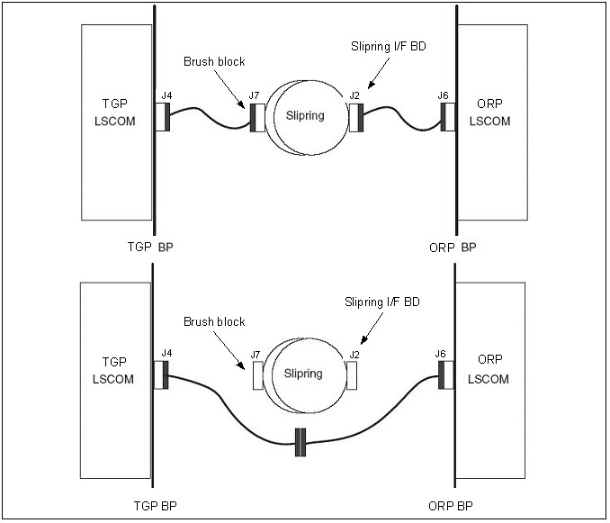

Corrective Action Summary
Section 4.2 - Remove Brush Block
Section 4.3 - Cleaning the Slipring
Section 4.4 - Replacing the Signal Brushes
Section 4.5 - Aligning the Brush Block
Optional procedure: Perform the Slipring Bypass Procedure described in Illustration 3 to perform a stationary test for disconnect failures.
Illustration 3: Bypass Procedure
